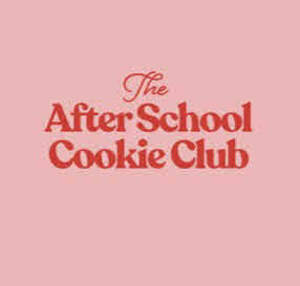

Trade Mark Journal No.2026/010 6 March 2026
UK00004344211 23 February 2026 (41,45)

- Class 41
- Education; Providing of training; Entertainment; Sporting and cultural activities; rental services relating to equipment and facilities for events; Special event planning; Organising community cultural events; arranging of cultural events; provision of recreational events; organising events for entertainment purposes; providing facilities for sports events; providing facilities for cultural events; providing facilities for recreational events; providing facilities for live events; providing facilities for live entertainment; providing facilities for educational events; Entertainment services in the nature of arranging social entertainment events; Providing facilities for sporting events, sports and athletic competitions and awards programmes; providing catering equipment; providing custom banners and signs for display at events; sign decorating services; banner decorating services; entertainment services relating to cookery and baking; providing non-downloadable electronic publications; organisation of events for educational, cultural or entertainment purposes; organisation of leisure activities; arranging and conducting competitions; publication services; training in catering; teaching services; conducting of classes; information and advisory services in relation to all the aforesaid services.
- Class 45
- Legal services; Security services for the physical protection of tangible property and individuals; Dating services, online social networking services; Funerary services; Babysitting; Licensing of trademarks; Licensing of printed matter; Licensing services; Licensing of franchise concepts; Licensing of intellectual property; Licensing services relating to the manufacture of goods; Licensing of intellectual property in the field of trademarks [legal services]; licensing of franchise concepts relating to catering, desserts, coffee shops; information and advisory services in relation to all the aforesaid services.
Humble Creations Limited
Representative: Stobbs